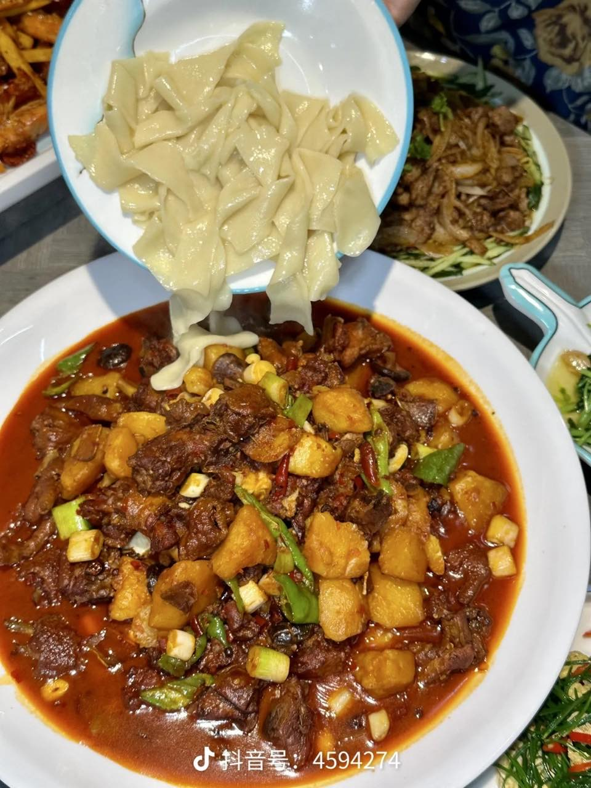
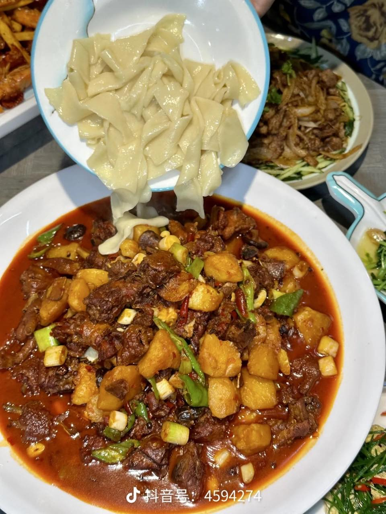

大盘鸡照片与特点
色香味形俱全的西北特色菜肴


 

色泽红亮
大盘鸡以红亮的酱汁包裹鸡块，色泽鲜艳，辣椒、土豆、鸡肉交织在一起，看起来非常有食欲。
麻辣鲜香
大盘鸡味道浓郁，既有辣椒的麻辣，又有鸡肉的鲜香，汤汁醇厚，回味悠长。
营养均衡
鸡肉富含蛋白质，土豆提供碳水化合物和膳食纤维，青椒、红椒等蔬菜补充维生素，是一道营养均衡的美食。
做法多样
大盘鸡的做法有多种，可根据个人口味调整辣度，有的做法会加入洋葱、胡萝卜等配菜，也可以搭配面条或馕一起食用。
文化意义
大盘鸡是新疆地区的特色菜肴，也是西北饮食文化的代表之一，常用于招待客人和家庭聚餐，体现了热情好客的民族风情。